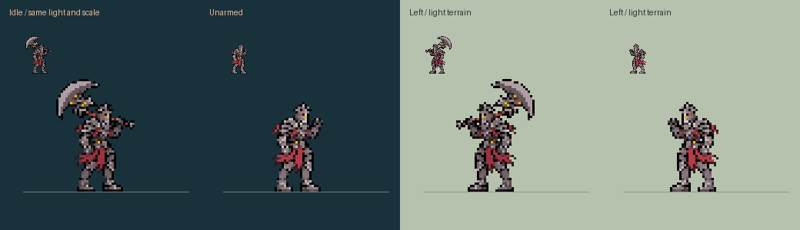
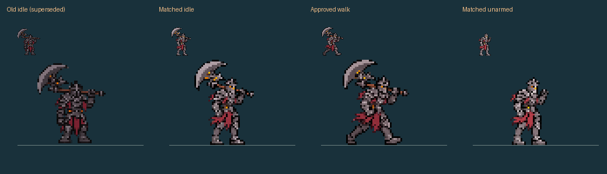

Approved flat floor fissure

The floor crack follows the committed direction. Only the endpoint becomes an upright pillar.
The old dark idle and split-body rig are superseded. Idle follows the approved walking character: the same helmet, steel highlights, crimson cloth and physical scale.
Four complete idle drawings and the approved six walk drawings. Walk pixels are preserved. The nominal cycle is 0.96 seconds, twice the old duration. In the live Lab, phase follows actual travel: one cycle per 60,000 world units. Pausing, rendering and changing weapons cannot advance it. Gameplay movement speed is unchanged.


Idle body height is 39 pixels. Walking retains its natural 38–41-pixel bob and leg extension, with the same foot anchor. Frozen sources and reproducible whole-frame extraction; no torso/leg rig or per-frame body rescaling.
The floor crack follows the committed direction. Only the endpoint becomes an upright pillar.
Attack, casts, hit and death cycles still need completion from this same identity. The Lab explicitly identifies those poses as matched-idle placeholders rather than displaying the old dark body. Final game assets, native alignment, live acceptance, packaging, installation and career migration remain separate.
The current PR core is shared with native. Lab movement, mitigation, visibility and cage enforcement are simulated host models; this does not prove stock-engine isolation.